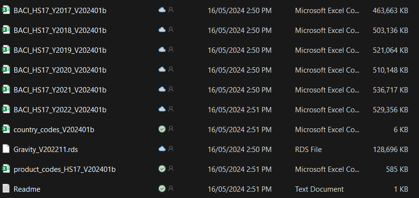
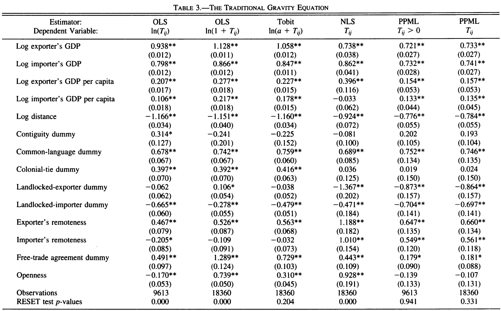

Gravity in R: a short workshop
For the latest version click here.
Introduction
The gravity model is probably the most popular model in international trade. Many uses them. It is very intuitive, great predictive power, and most importantly, tweakable (Yotov 2022). But the even most important is that UI students love them. If you’re doing trade for your thesis, then you probably going to use the gravity model as your backbone.
This guide is my attempt to help you learn gravity model much easier. The most important part is probably the data and the model itself. What is the minimum things you need in the gravity model, how to arrange the database, run them, and interpret them. You must familiarize yourself with the data and its wrangling (80% of your coding) as well as the main gravity specification to date. I encourage students to pay careful attention to Yotov (2022) as it hosts the recent development in the gravity model, a must read if you’re planning to utilize gravity model.
I use R here because I use R much more than Stata these days. However, the two language aren’t very different. You can do the same thing on both, but you may need to google a bit. It’s okay to use google a lot. I did as well even right now. Oh yeah I also informed you guys know R already so I won’t go into too much basic stuff.
Next is the preparation you’ll need. Make sure you read it carefully and install & download everything in advance!
Preparation
This workshop is conducted with the R statistical software, RStudio IDE, and “fixest” (Bergé 2018; Berge and McDermott 2024) package, which documatation can be accessed on CRAN. Well, of course you can also explore other packages e.g., Correia, Guimarães, and Zylkin (2020) and Woelwer et al. (2023), also Stata has amazing ppmlhdfe package you can use as well if you want, but i’m sticking with fixest for this docs.
Of course you’re going to need tidyverse as well, or specifically dplyr package. You want to procure data beforehand too, and I will use CEPII data. let’s discuss one by one.
Software
You’d want to use R and RStudio for this. The main reason I use R is because it’s free. Stata is not. I think Stata is faster and a bit easier (R people will kill me if they see this) but not cheap. If you have Stata it’s fine too. The command you’d want in Stata is ppmlhdfe.
Now onto R. You can procure R and RStudio from Posit’s website. Get it here. I wrote the guide to install R and RStudio here, so you better check it out. It’s written in Indonesian.
After that, you are going to need to install some packages. Follow my step until I told you to do type this on the console install.packages(c("tidyverse","WDI","readxl","kableExtra")). You are going to do the same but you’re going to few different stuff. Specifically, you need to add “fixest”, “modelsummary” and “writexl” on the list. That is, you need to type
install.packages(c("tidyverse","WDI","readxl","writexl","fixest","modelsummary"))This step requires internet connection, but you’ll need to do this only once.
Data
I procure data for this workshop from CEPII. From their website, CEPII is:
he CEPII is the leading French center for research and expertise on the world economy. It contributes to the policy making process trough its independent in-depth analyses on international trade, migrations, macroeconomics and finance. The CEPII also produces databases and provides a platform for debate among academics, experts, practitioners, decision makers and other private and public stakeholders. Founded in 1978, the CEPII is part of the network coordinated by France Strategy, within the Prime Minister’s services.
I use their BACI dataset (Gaulier and Zignago 2010) and gravity dataset (Conte, Cotterlaz, and Mayer 2022). You can get those from this link. BACI is under “international trade” banner while gravity is under “Gravity” banner. Specifically, I downloaded the 2017-2022 version of BACI and for the gravity dataset I downloaded the R version. You can of course download whichever version you like but for the purpose of this workshop maybe its best to stick with the same dataset as I.
You can also download from my drive.
Note that the data here is extremely large in size so be mindful. You need hefty internet quota and reasonable speed. Also, you can try opening it with spreadsheet software but unless you have a strong computer, i’d advice against it. Use R instead.
In the CEPII website you can use various other dataset that may be useful for you. At the same time, there are various other source you can utilise for your actual project that’s not necessarily from CEPII.
working directory
If you finished downloading data and installing softwares, you then need to set up a working directory. A working directory is basically a folder where you have all the data and your R script (R version of do file). For now what you want is to have a folder filled with your downloaded data. Make sure you know the path to this folder. I tend to use easy path for my projects and move it somewhere else when i finished. If you use github or the likes, it’ll be even nicer because you can actually wipe out your local repo if you finish.
All in all, you should have a folder with these stuff in it:

Notes about the data country_codes, product_codes and Readme are all for reading BACI.
Packages
for this page I use these packages but you may not need all of them
Simple gravity specification
Theory
The earliest (e.g., naive) gravity model taking directly from Newtonian gravity theory looks something like this:
\[ X_{ij}=\tilde{G}\frac{Y_iE_j}{T_{ij}^\theta} \tag{1}\]
where \(X_{it}\) is the value of trade flow from country \(i\) to country \(j\), \(\tilde{G}\) is the gravitational constant (aka our usual constant), \(Y_i\) is the output in country \(i\) \(E_j\) is the value of expenditure in country \(j\) and \(T_{ij}\) is the total bilateral trade frictions / trade cost between country \(i\) and country \(j\).
There are various other types of gravity equations, but let’s start with a relatively simple one. One of my favorite simple gravity specification is a budget version of Silva and Tenreyro (2006) which is taken from Anderson and Wincoop (2003) which looks like this:
\[ X_{ij}=\alpha_0 Y_i^{\alpha_1}Y_j^{\alpha_2}D_{ij}^{\alpha_3}e^{\theta_id_i+\theta_jd_j} \tag{2}\]
where \(\alpha_0\) is your \(\tilde{G}\), while \(Y\) is the output and expenditure which is proxied with GDP. \(D_{ij}\) is the distance between the two countries, which can be generalized as a vector of trade cost measures. Typically we use physical distance but also other types of bilateral trade cost. Lastly, the \(d_i\) and \(d_j\) is country-specific characteristics.
There are various variables used in Silva and Tenreyro (2006). log of exporter’s and importer’s GDP and GDP per capita. Various “distance” variables is used as well e.g., physical distance and variables like contiguity, common-language dummy, colonial-tie dummy and free trade agreement dummy.
Note that our regression consists only of two indices: exporter \(i\) and importer \(j\). We are going to use the gravity data I mentioned earlier, slice the dataset to cover only one year chosen arbitrarily (which is 2019), and run Equation 2.
Setting data
first we load all the necessary data:
The gravity is the data from CEPII while key is storing some country codes. You can see the first 10 rows of the data and its variable names you call their name. Just type gravity or key in the console then hit enter. However, if you just want to look at the variable names, you can use colnames()
Code
colnames(gravity) [1] "year" "country_id_o" "country_id_d"
[4] "iso3_o" "iso3_d" "iso3num_o"
[7] "iso3num_d" "country_exists_o" "country_exists_d"
[10] "gmt_offset_2020_o" "gmt_offset_2020_d" "distw_harmonic"
[13] "distw_arithmetic" "distw_harmonic_jh" "distw_arithmetic_jh"
[16] "dist" "main_city_source_o" "main_city_source_d"
[19] "distcap" "contig" "diplo_disagreement"
[22] "scaled_sci_2021" "comlang_off" "comlang_ethno"
[25] "comcol" "col45" "legal_old_o"
[28] "legal_old_d" "legal_new_o" "legal_new_d"
[31] "comleg_pretrans" "comleg_posttrans" "transition_legalchange"
[34] "comrelig" "heg_o" "heg_d"
[37] "col_dep_ever" "col_dep" "col_dep_end_year"
[40] "col_dep_end_conflict" "empire" "sibling_ever"
[43] "sibling" "sever_year" "sib_conflict"
[46] "pop_o" "pop_d" "gdp_o"
[49] "gdp_d" "gdpcap_o" "gdpcap_d"
[52] "pop_source_o" "pop_source_d" "gdp_source_o"
[55] "gdp_source_d" "gdp_ppp_o" "gdp_ppp_d"
[58] "gdpcap_ppp_o" "gdpcap_ppp_d" "pop_pwt_o"
[61] "pop_pwt_d" "gdp_ppp_pwt_o" "gdp_ppp_pwt_d"
[64] "gatt_o" "gatt_d" "wto_o"
[67] "wto_d" "eu_o" "eu_d"
[70] "fta_wto" "fta_wto_raw" "rta_coverage"
[73] "rta_type" "entry_cost_o" "entry_cost_d"
[76] "entry_proc_o" "entry_proc_d" "entry_time_o"
[79] "entry_time_d" "entry_tp_o" "entry_tp_d"
[82] "tradeflow_comtrade_o" "tradeflow_comtrade_d" "tradeflow_baci"
[85] "manuf_tradeflow_baci" "tradeflow_imf_o" "tradeflow_imf_d" As you can see, the column names are so plenty. Consult to the CEPII website or Conte, Cotterlaz, and Mayer (2022) to learn more. We will only use some of them, so we will filter these data to make it more concise. Specifically, we will (1) remove some countries, (2) remove non-2019, and (3) remove variables we are not using.
For variables, we will keep iso3_o, iso3_d, distw_harmonic, contig, comcol, comlang_off,gdp_o,gdp_d, gdpcap_o, gdpcap_d,fta_wto. Note that o means origin / exporter and d means destination / importer.
Code
## create a country list
ctr<-c("Albania", "Denmark", "Kenya", "Romania", "Algeria", "Djibouti", "Kiribati", "Russian Federation", "Angola", "Dominican Rep.", "Korea, Rep.", "Rwanda", "Argentina", "Ecuador", "Laos", "P. Dem. Rep.", "Saudi Arabia", "Australia", "Egypt", "Lebanon", "Senegal", "Austria", "El Salvador", "Madagascar", "Seychelles", "Bahamas", "Eq. Guinea", "Malawi", "Sierra Leone", "Bahrain", "Ethiopia", "Malaysia", "Singapore", "Bangladesh", "Fiji", "Maldives", "Solomon Islands", "Barbados", "Finland", "Mali", "South Africa", "Belgium-Lux.", "France", "Malta", "Spain", "Belize", "Gabon", "Mauritania", "Sri Lanka", "Benin", "Gambia", "Mauritius", "St. Kitts and Nevis", "Bhutan", "Germany", "Mexico", "Sudan", "Bolivia", "Ghana", "Mongolia", "Suriname", "Brazil", "Greece", "Morocco", "Sweden", "Brunei", "Guatemala", "Mozambique", "Switzerland", "Bulgaria", "Guinea", "Nepal", "Syrian Arab Rep.", "Burkina Faso", "Guinea-Bissau", "Netherlands", "Tanzania", "Burundi", "Guyana", "New Caledonia", "Thailand", "Cambodia", "Haiti", "New Zealand", "Togo", "Cameroon", "Honduras", "Nicaragua", "Trinidad and Tobago", "Canada", "Hong Kong", "Niger", "Tunisia", "Central African Rep.", "Hungary", "Nigeria", "Turkey", "Chad", "Iceland", "Norway", "Uganda", "Chile", "India", "Oman", "United Arab Em.", "China", "Indonesia", "Pakistan", "United Kingdom", "Colombia", "Iran", "Panama", "United States", "Comoros", "Ireland", "Papua New Guinea", "Uruguay", "Congo Dem. Rep.", "Israel", "Paraguay", "Venezuela", "Congo Rep.", "Italy", "Peru", "Vietnam", "Costa Rica", "Jamaica", "Philippines", "Yemen", "Cote D’lvoire", "Japan", "Poland", "Zambia", "Cyprus", "Jordan", "Portugal", "Zimbabwe")
vrb<-c("iso3num_o","iso3num_d","year","iso3_o", "iso3_d", "distw_harmonic", "contig", "comcol", "comlang_off","gdp_o","gdp_d", "gdpcap_o", "gdpcap_d","fta_wto","tradeflow_baci")
## keep 2019
gravity2<-gravity|>filter(year==2019)|> # Keep tahun 2019
filter(country_id_o!="IDN.1") |> # IDN.1 ini jaman kolonial, kita drop
filter(country_id_d!="IDN.1") |> # IDEM
filter(iso3_o!=iso3_d) # drop obs yang o=d
## Keep countries in the list
key2<-key |> filter(country_name%in%ctr)
gravity2<-gravity2 |> filter(country_id_o %in% key2$country_iso3 &
country_id_d %in% key2$country_iso3)
gravity2<-gravity2 |> select(vrb)
## Make a log versin
gravity2<-gravity2 |>
mutate(ldist=log(distw_harmonic),
lgdpo=log(gdp_o),
lgdpd=log(gdp_d),
lgdpco=log(gdpcap_o),
lgdpcd=log(gdpcap_d),
logtrade=log(1+tradeflow_baci))You can see in your environment tab the difference between gravity and gravity2 as well as between key and key2 on the number of observations and variables. Note that we also log non-dummy variables for gravity2 to redo Silva and Tenreyro (2006).
We will focus on the gravity2 as it will be the dataset we will run. You can quickly show summary statistics by typing summary(gravity2) on the console tab.
Code
summary(gravity2) iso3num_o iso3num_d year iso3_o
Min. : 8.0 Min. : 8.0 Min. :2019 Length:12210
1st Qu.:204.0 1st Qu.:204.0 1st Qu.:2019 Class :character
Median :400.0 Median :400.0 Median :2019 Mode :character
Mean :415.5 Mean :415.5 Mean :2019
3rd Qu.:616.0 3rd Qu.:616.0 3rd Qu.:2019
Max. :894.0 Max. :894.0 Max. :2019
iso3_d distw_harmonic contig comcol
Length:12210 Min. : 110 Min. :0.00000 Min. :0.00000
Class :character 1st Qu.: 4546 1st Qu.:0.00000 1st Qu.:0.00000
Mode :character Median : 7659 Median :0.00000 Median :0.00000
Mean : 8003 Mean :0.01769 Mean :0.09828
3rd Qu.:11062 3rd Qu.:0.00000 3rd Qu.:0.00000
Max. :19676 Max. :1.00000 Max. :1.00000
comlang_off gdp_o gdp_d gdpcap_o
Min. :0.0000 Min. :1.779e+05 Min. :1.779e+05 Min. : 0.224
1st Qu.:0.0000 1st Qu.:1.419e+07 1st Qu.:1.419e+07 1st Qu.: 1.909
Median :0.0000 Median :4.805e+07 Median :4.805e+07 Median : 6.321
Mean :0.1805 Mean :4.785e+08 Mean :4.785e+08 Mean :15.262
3rd Qu.:0.0000 3rd Qu.:3.512e+08 3rd Qu.:3.512e+08 3rd Qu.:18.480
Max. :1.0000 Max. :1.428e+10 Max. :1.428e+10 Max. :85.335
NA's :110 NA's :110 NA's :110
gdpcap_d fta_wto tradeflow_baci ldist
Min. : 0.224 Min. :0.0000 Min. : 0 Min. :4.700
1st Qu.: 1.909 1st Qu.:0.0000 1st Qu.: 273 1st Qu.:8.422
Median : 6.321 Median :0.0000 Median : 6343 Median :8.944
Mean :15.262 Mean :0.2041 Mean : 611172 Mean :8.768
3rd Qu.:18.480 3rd Qu.:0.0000 3rd Qu.: 87003 3rd Qu.:9.311
Max. :85.335 Max. :1.0000 Max. :149568313 Max. :9.887
NA's :110 NA's :2074
lgdpo lgdpd lgdpco lgdpcd
Min. :12.09 Min. :12.09 Min. :-1.4961 Min. :-1.4961
1st Qu.:16.47 1st Qu.:16.47 1st Qu.: 0.6466 1st Qu.: 0.6466
Median :17.69 Median :17.69 Median : 1.8438 Median : 1.8438
Mean :17.93 Mean :17.93 Mean : 1.8087 Mean : 1.8087
3rd Qu.:19.68 3rd Qu.:19.68 3rd Qu.: 2.9167 3rd Qu.: 2.9167
Max. :23.38 Max. :23.38 Max. : 4.4466 Max. : 4.4466
NA's :110 NA's :110 NA's :110 NA's :110
logtrade
Min. : 0.001
1st Qu.: 5.613
Median : 8.755
Mean : 8.438
3rd Qu.:11.374
Max. :18.823
NA's :2074 Regression
Let’s do 2 types of regression. First we do a regression using a normal ols, and secondly we do ppml.
reg1<-feols(data=gravity2,logtrade~lgdpo+lgdpd+lgdpco+lgdpcd+ldist+contig+
comcol+comlang_off+fta_wto)
reg2<-feols(data=gravity2,logtrade~lgdpo+lgdpd+lgdpco+lgdpcd+ldist+contig+
comcol+comlang_off+fta_wto+iso3_o+iso3_d)
reg3<-fepois(data=gravity2,tradeflow_baci~lgdpo+lgdpd+lgdpco+lgdpcd+ldist+
contig+comcol+comlang_off+fta_wto)
reg4<-fepois(data=gravity2,tradeflow_baci~lgdpo+lgdpd+lgdpco+lgdpcd+ldist+
contig+comcol+comlang_off+fta_wto+iso3_o+iso3_d)You can call each reg’s table with summary(reg1).
| OLS no dum | OLS w dum | PPML no dum | PPML w dum | |
|---|---|---|---|---|
| + p < 0.1, * p < 0.05, ** p < 0.01, *** p < 0.001 | ||||
| (Intercept) | -21.866*** | 43.403 | -15.380*** | -118.218*** |
| (0.414) | (331632.607) | (0.000) | (0.082) | |
| lgdpo | 1.239*** | -0.612 | 0.895*** | 6.704*** |
| (0.013) | (13637.338) | (0.000) | (0.004) | |
| lgdpd | 0.947*** | -1.135 | 0.814*** | 1.349*** |
| (0.013) | (20808.385) | (0.000) | (0.003) | |
| lgdpco | 0.251*** | 4.086 | -0.041*** | -10.947*** |
| (0.018) | (34680.508) | (0.000) | (0.009) | |
| lgdpcd | 0.066*** | 7.073 | -0.037*** | -1.280*** |
| (0.018) | (52916.880) | (0.000) | (0.007) | |
| contig | 0.899*** | 0.594** | 0.185*** | 0.334*** |
| (0.165) | (0.203) | (0.000) | (0.000) | |
| comcol | 0.489*** | 0.317** | 0.110*** | 0.519*** |
| (0.082) | (0.114) | (0.000) | (0.000) | |
| comlang_off | 0.781*** | 0.778*** | 0.238*** | 0.162*** |
| (0.061) | (0.085) | (0.000) | (0.000) | |
| fta_wto | 0.702*** | 0.559*** | 0.383*** | 0.380*** |
| (0.057) | (0.079) | (0.000) | (0.000) | |
| ldist | -1.215*** | -1.466*** | -0.606*** | -0.711*** |
| (0.032) | (0.044) | (0.000) | (0.000) | |
| Num.Obs. | 9990 | 9990 | 9990 | 9990 |
| R2 | 0.720 | 0.611 | 0.873 | 0.922 |
| R2 Adj. | 0.720 | 0.602 | 0.873 | 0.922 |
| AIC | 43228.2 | 46948.9 | 4281748269.4 | 2638932248.1 |
| BIC | 43300.3 | 48578.2 | 4281748341.5 | 2638933863.0 |
| RMSE | 2.10 | 2.48 | 2097486.21 | 1585544.68 |
| Std.Errors | IID | IID | IID | IID |
You can compare results with Silva and Tenreyro (2006). Note that they don’t use fixed effects.

By the way, you can save the regression table using modelsummary(). don’t forget to run library(modelsummary) first. You can use xlsx extension, but also docx.
regtab<- list(
"OLS no ctr" = reg1,
"OLS with ctr" = reg2,
"PPML no ctr"=reg3,
"PPML with ctr"=reg4
)
modelsummary(regtab,output="regtab.xlsx")Product level gravity
Theory
We then proceed to a higher-dimension trade data which you may be interested in. In the field, UI students often interested largely in Indonesian affairs. That is, we are not interested so much in the bilateral flow of all countries, but only on Indonesia. However, we often use more granular dimension than just exporter/importer. Often times we use indices like time, commodities or industries, or even firms (shamelessly inserting my paper here Gupta (2023)).
Now, if you are planning to do these kinds of studies, then you are going to need to tackle higher degree dataset and merging the gravity variables. Most often you can get these variables from World Development Indicators but CEPII is ok for now (note the main problem of CEPII is its timeliness).
The theory isn’t so different compared to our previous gravity model. What we want is an additional indices. We are going to estimate something similar as Equation 2 but with more indices. We need to care about multilateral resistance (MR) and we can use dummies since we now have more variations from indices like time and HS code.
According to Yotov (2022), we need at least 3 dummies to run a multi-country, multi-time and multi-goods/sectors1. We need to have exporter-time dummy, importer-time dummy and country-pair dummy. We need to construct this first. Note that these dummies will likely absorb some of your variables like distance (consistant between pair across time, typically).
So we will do the HS,time varying version of Equation 2:
\[ X_{ijpt}=\alpha_0 Y_{it}^{\alpha_1}Y_{jt}^{\alpha_2}D_{ijpt}^{\alpha_3}e^{\theta_1o_{it}+\theta_2d_{jt}+\theta_3p_{ij}} \tag{3}\]
Setting data
This time we need BACI data. Brace yourself because this dataset is HUGE. We read 5 different years.
Code
t2017<-read_csv("BACI_HS17_Y2017_V202401b.csv")
t2018<-read_csv("BACI_HS17_Y2018_V202401b.csv")
t2019<-read_csv("BACI_HS17_Y2019_V202401b.csv")
t2020<-read_csv("BACI_HS17_Y2020_V202401b.csv")
t2021<-read_csv("BACI_HS17_Y2021_V202401b.csv")
## Combining all
trade<-rbind(t2017,t2018,t2019,t2020,t2021)
remove(t2017,t2018,t2019,t2020,t2021)I used read_csv from the tydiverse package for reading .csv. rbind is to stack all BACI data (it was separated per year), then I remove the individual BACI to save environment space.
At this point, you can try checking out the two datasets. You can try looking at both data by calling their names. Alternatively, just look at the column names with colnames(). Let’s try the BACI frist.
Code
colnames(trade)[1] "t" "i" "j" "k" "v" "q"There are only 6 columns / variables. Here’s some information on what thos means
| var | meaning |
|---|---|
| t | year |
| i | exporter |
| j | importer |
| k | product |
| v | value |
| q | quantity |
Products in Harmonized System 6-digit nomenclature. Values in thousand USD and quantities in metric tons. Exporter and importer is codified using CEPII codes. the codes and it means can be found in the “key” dataset. To have country identities into the BACI dataset, we need to join the two.
To join the two datasets, we need a key variable. A key variable is the variable connecting the two variables. Both needs the same name. So first we need to assign the same name for exporter and importer codes between BACI and gravity.
We know that \(i\) in BACI is iso3num_o in gravity, while \(j\) in BACI is iso3num_d in gravity. So we rename the one in BACI so both have the same name:
Code
## Change ctr to reduce computation problem
ctr<-c("IDN.2","SGP","VNM","MYS","THA","PHL","USA","CHN","JPN","KOR")
## IDN.2 adalah IDN yang baru yg datanya ada di gravity dataset. coba cek detil
##di gravity dataset
## Rename variable
trade2<-trade|>rename(iso3num_o=i,iso3num_d=j,year=t)
## Kita ulangi gravity2 karena sekarang perlu tahun 2017-2021
gravity2<-gravity|>filter(year>2016 & year<2022)
gravity2<-gravity2 |> filter(country_id_o %in%ctr & country_id_d %in% ctr)
## notice the change
gravity2<-gravity2 |> select(vrb)
## remove negara yang di luar ctr di BACI
trade2<-trade2|>filter(iso3num_o%in%gravity2$iso3num_o &
iso3num_d%in%gravity2$iso3num_d)
## gabung dengan trade2
gabung<-left_join(gravity2,trade2,by=c("year","iso3num_o","iso3num_d"))Check the results with gabung or View(gabung). The most important thing here is that you have to make sure you understand the changes in variations! Now that we have time and HS (\(k\)), a pair of countries can have multiple observations in different year and different goods. tradeflow_baci will be repeated because this is the total trade, while now we focus on \(v\) and \(q\) as the \(X_{ijpt}\).
Before we go, however, we need to generate our dummies! Remember, we need to make three dummies, \(o_{it}\),\(d_{jt}\) and \(p_{ij}\) (see Equation 3). To do that, we do this:
You can check again whether it’s made. if you do tibble(gabung) you will see that we have created our factor variables. Oh yes, do not forget to log non-factors.
Why don’t we show the quick summary statistics?
Code
summary(gabung) iso3num_o iso3num_d year iso3_o
Min. :156.0 Min. :156.0 Min. :2017 Length:675318
1st Qu.:360.0 1st Qu.:360.0 1st Qu.:2018 Class :character
Median :410.0 Median :410.0 Median :2019 Mode :character
Mean :455.6 Mean :485.8 Mean :2019
3rd Qu.:702.0 3rd Qu.:702.0 3rd Qu.:2020
Max. :840.0 Max. :840.0 Max. :2021
iso3_d distw_harmonic contig comcol comlang_off
Length:675318 Min. : 10 Min. :0 Min. :0 Min. :0.00000
Class :character 1st Qu.: 1983 1st Qu.:0 1st Qu.:0 1st Qu.:0.00000
Mode :character Median : 2386 Median :0 Median :0 Median :0.00000
Mean : 2851 Mean :0 Mean :0 Mean :0.08458
3rd Qu.: 4138 3rd Qu.:0 3rd Qu.:0 3rd Qu.:0.00000
Max. :15486 Max. :0 Max. :0 Max. :1.00000
gdp_o gdp_d gdpcap_o gdpcap_d
Min. :3.285e+08 Min. :3.285e+08 Min. : 3.123 Min. : 3.123
1st Qu.:4.997e+08 1st Qu.:3.970e+08 1st Qu.: 7.233 1st Qu.: 4.135
Median :1.624e+09 Median :1.059e+09 Median :12.556 Median :10.144
Mean :4.282e+09 Mean :3.352e+09 Mean :24.902 Mean :23.307
3rd Qu.:5.040e+09 3rd Qu.:4.937e+09 3rd Qu.:39.285 3rd Qu.:39.285
Max. :2.300e+10 Max. :2.300e+10 Max. :72.794 Max. :72.794
fta_wto tradeflow_baci k v
Min. :0.0000 Min. : 592555 Length:675318 Min. : 0
1st Qu.:1.0000 1st Qu.: 9006116 Class :character 1st Qu.: 9
Median :1.0000 Median : 18272115 Mode :character Median : 124
Mean :0.8758 Mean : 34989027 Mean : 9266
3rd Qu.:1.0000 3rd Qu.: 42822895 3rd Qu.: 1443
Max. :1.0000 Max. :500928196 Max. :42892726
NA's :139250 NA's :112
q ooo ddd ppp
Min. : 0 156.2019: 26874 702.2019: 21217 156.410: 23391
1st Qu.: 0 156.2021: 26692 702.2018: 21012 156.764: 22295
Median : 11 156.2020: 26599 360.2020: 21004 156.392: 22228
Mean : 6199 156.2018: 26224 360.2019: 20959 156.360: 21896
3rd Qu.: 166 156.2017: 25350 702.2021: 20862 156.702: 21840
Max. :88344459 392.2019: 24725 702.2020: 20823 392.764: 21516
NA's :9882 (Other) :518854 (Other) :549441 (Other):542152
ldist lgdpo lgdpd lgdpco
Min. :2.303 Min. :19.61 Min. :19.61 Min. :1.139
1st Qu.:7.592 1st Qu.:20.03 1st Qu.:19.80 1st Qu.:1.979
Median :7.777 Median :21.21 Median :20.78 Median :2.530
Mean :7.778 Mean :21.32 Mean :21.03 Mean :2.760
3rd Qu.:8.328 3rd Qu.:22.34 3rd Qu.:22.32 3rd Qu.:3.671
Max. :9.648 Max. :23.86 Max. :23.86 Max. :4.288
lgdpcd logtrade
Min. :1.139 Min. : 0.001
1st Qu.:1.419 1st Qu.: 2.282
Median :2.317 Median : 4.828
Mean :2.607 Mean : 4.893
3rd Qu.:3.671 3rd Qu.: 7.275
Max. :4.288 Max. :17.574
NA's :112 Regression
ger1<-feols(data=gabung,logtrade~lgdpo+lgdpd+lgdpco+lgdpcd+contig+comcol+
comlang_off+fta_wto+ldist)
ger2<-feols(data=gabung,logtrade~lgdpo+lgdpd+lgdpco+lgdpcd+contig+comcol+
comlang_off+fta_wto+ldist+ooo+ddd+ppp)
ger3<-fepois(data=gabung,v~lgdpo+lgdpd+lgdpco+lgdpcd+contig+comcol+
comlang_off+fta_wto+ldist)
ger4<-fepois(data=gabung,v~lgdpo+lgdpd+lgdpco+lgdpcd+contig+comcol+
comlang_off+fta_wto+ldist+ooo+ddd+ppp)| OLS no dum | OLS with dum | PPML no dum | PPML with dum | |
|---|---|---|---|---|
| + p < 0.1, * p < 0.05, ** p < 0.01, *** p < 0.001 | ||||
| (Intercept) | -18.436*** | 0.129 | -12.672*** | -76.370*** |
| (0.112) | (1274.150) | (0.001) | (5.664) | |
| lgdpo | 0.860*** | 0.191 | 0.529*** | -1.870*** |
| (0.003) | (107.572) | (0.000) | (0.211) | |
| lgdpd | 0.373*** | 1.667 | 0.580*** | 4.613*** |
| (0.003) | (1.259) | (0.000) | (0.007) | |
| lgdpco | -0.001 | -16.332 | 0.032*** | 3.880*** |
| (0.004) | (1733.225) | (0.000) | (0.344) | |
| lgdpcd | -0.062*** | -0.044 | 0.062*** | 0.414*** |
| (0.004) | (0.081) | (0.000) | (0.000) | |
| comlang_off | 0.228*** | 0.678*** | 0.360*** | 0.549*** |
| (0.013) | (0.115) | (0.000) | (0.001) | |
| fta_wto | -0.081*** | -1.126 | 0.347*** | -7.578*** |
| (0.015) | (1.448) | (0.000) | (0.007) | |
| ldist | -0.337*** | 0.062 | -0.343*** | 2.587*** |
| (0.006) | (0.513) | (0.000) | (0.003) | |
| Num.Obs. | 675206 | 675206 | 675206 | 675206 |
| R2 | 0.146 | 0.165 | 0.121 | 0.130 |
| R2 Adj. | 0.146 | 0.165 | 0.121 | 0.130 |
| AIC | 3353993.3 | 3338724.4 | 36199829363.4 | 35817601698.7 |
| BIC | 3354084.7 | 3339821.0 | 36199829454.8 | 35817602829.6 |
| RMSE | 2.90 | 2.87 | 138393.96 | 138371.77 |
| Std.Errors | IID | IID | IID | IID |
As you can see, the difference is apparent when we use HS-6-digit instead of total trade. This is of course the case since now we have wild, uncontrolled variability in the goods characteristics. Indeed, the gravity equation is much better suited predicting total trade where country and year characteristics dominates and industry/goods heterogeneity is absorbed by the total trade. Remember, I use only small number of countries with tons of HS 6 digit2. Moreover, PPML sometimes act funny where zeroes are abundant combined with many dummies. Convergence sometimes unachieved / converge to a very strange parameters.
UI students typically only interested in Indonesia, so country pair dummy and indonesia-time dummy often not needed. Of course then you can add dummies like sector dummy or HS Chapter dummy.
Closing
OKay now you are ready to run regression yourself. Try to replicate what I do here and you prolly finished 50% of your thesis. You then can work to update this with your own hypothesis, adding more variable and more concentrated.
Running this on Stata is also excellent. I must confess that R is also speedy (these guys making the package is extremely good), but Stata is a bit more intuitive and compute you with important stats as well such as pseudo-R. Nevertheless, now you should be able to do both!
As you are a student now, I encourage you to explore as much as you can because this is the moment. Once you’re a proper adult, you must think more mundane stuff so please value your freedom at this point and explore as much as you can! Go out there make mistakes while you can!
I cannot emphasize enough references in Yotov (2022). Whatever you want to do, a paper prolly covered it already. Learn from them and look for an insight to add. Work with your spv and you’ll be fine.